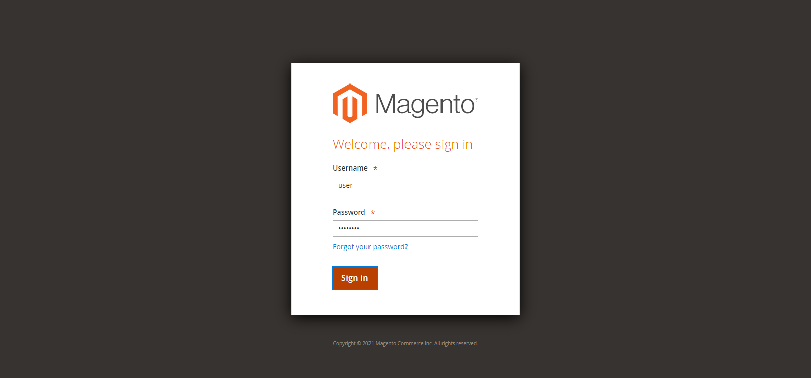
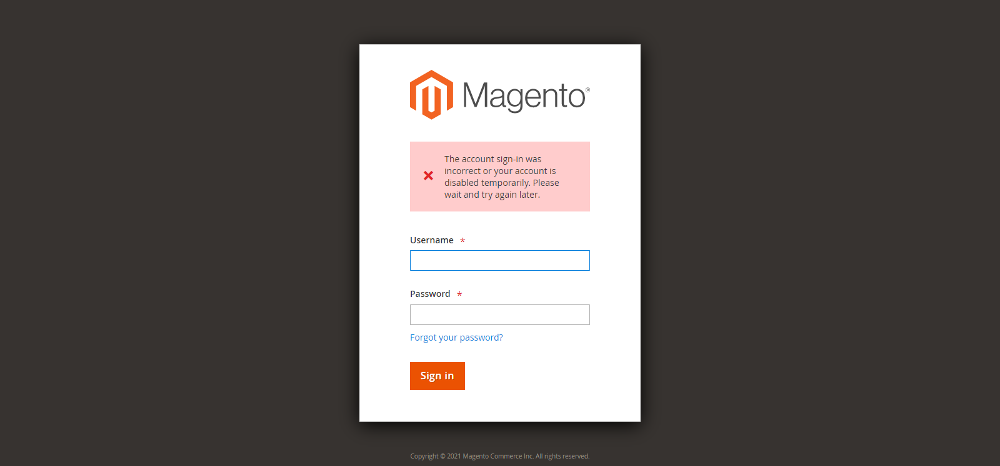

Started
Apr. 7, 2021 11:49:51 a.m.
Ended
Apr. 7, 2021 11:59:53 a.m.
Features Passed
1
Features Failed
2
Features
Scenarios
Steps
Timeline
Tags
| Name | Passed | Failed | Skipped | Others | Passed % |
|---|---|---|---|---|---|
| @Connexion | 3 | 1 | 0 | 0 | 75% |
| @Déconnexion | 1 | 0 | 0 | 0 | 100% |
| @Navigation | 8 | 1 | 0 | 0 | 88.889% |
| @Nominal | 10 | 1 | 0 | 0 | 90.909% |
| @Fumée | 12 | 2 | 0 | 0 | 85.714% |
| @Exception | 2 | 1 | 0 | 0 | 66.667% |
System/Environment
| Name | Value |
|---|---|
| ARCHITECTURE | 64 bit |
| RAM | 12GB |
| AUT | Magento |
| TOOL | Selenium 3.141.59 |
| FRAMEWORK | JUnit 4 |
| BUILD | 1.1 |
| CPU | i5 gen 3 |
| BDD | Cucumber |
| LANGUAGE | Java 8 |
| AUTHOR | mk-sdet |
| IDE | Eclipse 2020-12 (4.18.0) |
| OS | Windows 10 20H2 English |
-
Affichage de la barre de menus de navigation
11:49:54 a.m. / 00:07:53:932 Fail
Affichage de la barre de menus de navigation
04.07.2021 11:49:54 04.07.2021 11:57:48 00:07:53:932 · #test-id=1En tant qu'administrateur, je désire pouvoir me retrouver à travers les menus ainsi que leurs sous-menus dans la barre de navigation pour mieux gérer mes sites web.FailVérifier l'affichage des menus de navigationSoit je suis connecté à l'applicationAlors les menus de navigation suivants doivent être affichés:DASHBOARD SALES CATALOG CUSTOMERS MARKETING CONTENT REPORTS STORES SYSTEM FIND PARTNERS & EXTENSIONS Step skippedcom.app.hooks.ReportHook.afterScenario_Screenshot(io.cucumber.java.Scenario)Vérifier_l'affichage_des_menus_de_navigationPassVérifier l'affichage des sous-menus de navigationSoit je suis connecté à l'applicationQuand je clique sur le menu de navigation "SALES"Alors ses sous-menus, compris dans le fichier "navSubmenus.json", doivent s'afficher sous le(s) titre(s) "Sales"PassVérifier l'affichage des sous-menus de navigationSoit je suis connecté à l'applicationQuand je clique sur le menu de navigation "CATALOG"Alors ses sous-menus, compris dans le fichier "navSubmenus.json", doivent s'afficher sous le(s) titre(s) "Catalog"PassVérifier l'affichage des sous-menus de navigationSoit je suis connecté à l'applicationQuand je clique sur le menu de navigation "CUSTOMERS"Alors ses sous-menus, compris dans le fichier "navSubmenus.json", doivent s'afficher sous le(s) titre(s) "Customers"PassVérifier l'affichage des sous-menus de navigationSoit je suis connecté à l'applicationQuand je clique sur le menu de navigation "MARKETING"Alors ses sous-menus, compris dans le fichier "navSubmenus.json", doivent s'afficher sous le(s) titre(s) "Promotions, Communications, SEO & Search, User Content, Customer Engagement"PassVérifier l'affichage des sous-menus de navigationSoit je suis connecté à l'applicationQuand je clique sur le menu de navigation "CONTENT"Alors ses sous-menus, compris dans le fichier "navSubmenus.json", doivent s'afficher sous le(s) titre(s) "Elements, Design"PassVérifier l'affichage des sous-menus de navigationSoit je suis connecté à l'applicationQuand je clique sur le menu de navigation "REPORTS"Alors ses sous-menus, compris dans le fichier "navSubmenus.json", doivent s'afficher sous le(s) titre(s) "Marketing, Reviews, Sales, Customers, Products, Statistics, Business Intelligence, Customer Engagement"PassVérifier l'affichage des sous-menus de navigationSoit je suis connecté à l'applicationQuand je clique sur le menu de navigation "STORES"Alors ses sous-menus, compris dans le fichier "navSubmenus.json", doivent s'afficher sous le(s) titre(s) "Settings, Inventory, Taxes, Currency, Attributes"PassVérifier l'affichage des sous-menus de navigationSoit je suis connecté à l'applicationQuand je clique sur le menu de navigation "SYSTEM"Alors ses sous-menus, compris dans le fichier "navSubmenus.json", doivent s'afficher sous le(s) titre(s) "Data Transfer, Extensions, Tools, Permissions, Action Logs, Other Settings" -
Connexion
11:57:48 a.m. / 00:01:15:051 Fail
Connexion
04.07.2021 11:57:48 04.07.2021 11:59:03 00:01:15:051 · #test-id=64En tant qu'administrateur, je désire pouvoir me connecter à l'application.PassVérifier la connexion avec un nom d'utilisateur et un mot de passe validesSoit un navigateur est ouvertQuand je me rend sur le site admin de l'applicationAlors je suis sur la page de connexionQuand je me connecte avec les identifiants suivants:nom_utilisateur mot_de_passe user bitnami1 Alors je suis sur la page du tableau de bordPassVérifier la connexion avec un nom d'utilisateur invalide et un mot de passe valideSoit un navigateur est ouvertQuand je me rend sur le site admin de l'applicationAlors je suis sur la page de connexionQuand je me connecte avec le nom d'utilisateur "" et le mot de passe "bitnami1"Alors un message d'erreur concernant le nom d'utilisateur s'affichePassVérifier la connexion avec un nom d'utilisateur valide et un mot de passe invalideSoit un navigateur est ouvertQuand je me rend sur le site admin de l'applicationAlors je suis sur la page de connexionQuand je me connecte avec le nom d'utilisateur "user" et le mot de passe ""Alors un message d'erreur concernant le mot de passe s'afficheFailVérifier la connexion avec un nom d'utilisateur et un mot de passe invalidesSoit un navigateur est ouvertQuand je me rend sur le site admin de l'applicationAlors je suis sur la page de connexionQuand je me connecte avec le nom d'utilisateur "" et le mot de passe ""Alors un message d'erreur concernant le nom d'utilisateur s'afficheEt un message d'erreur concernant le mot de passe s'afficheStep skippedcom.app.hooks.ReportHook.afterScenario_Screenshot(io.cucumber.java.Scenario)Vérifier_la_connexion_avec_un_nom_d'utilisateur_et_un_mot_de_passe_invalides -
Déconnexion
11:59:03 a.m. / 00:00:47:864 Pass
Déconnexion
04.07.2021 11:59:03 04.07.2021 11:59:51 00:00:47:864 · #test-id=98En tant qu'administrateur, je désire pouvoir me déconnecter de l'application.PassVérifier la déconnexionSoit je suis connecté à l'applicationQuand je me déconnecte de l'applicationAlors je suis sur la page de connexionEt un message confirmant la déconnexion est affiché
-
@Connexion
4 tests
@Connexion
3 passed 1 failedStatus Timestamp TestName Pass 11:57:48 a.m. Vérifier la connexion avec un nom d'utilisateur et un mot de passe valides Connexion.Vérifier la connexion avec un nom d'utilisateur et un mot de passe validesPass 11:58:32 a.m. Vérifier la connexion avec un nom d'utilisateur invalide et un mot de passe valide Connexion.Vérifier la connexion avec un nom d'utilisateur invalide et un mot de passe validePass 11:58:41 a.m. Vérifier la connexion avec un nom d'utilisateur valide et un mot de passe invalide Connexion.Vérifier la connexion avec un nom d'utilisateur valide et un mot de passe invalideFail 11:58:49 a.m. Vérifier la connexion avec un nom d'utilisateur et un mot de passe invalides Connexion.Vérifier la connexion avec un nom d'utilisateur et un mot de passe invalides -
@Déconnexion
1 tests
@Déconnexion
1 passedStatus Timestamp TestName Pass 11:59:03 a.m. Vérifier la déconnexion Déconnexion.Vérifier la déconnexion -
@Navigation
9 tests
@Navigation
8 passed 1 failedStatus Timestamp TestName Fail 11:49:54 a.m. Vérifier l'affichage des menus de navigation Affichage de la barre de menus de navigation.Vérifier l'affichage des menus de navigationPass 11:52:21 a.m. Vérifier l'affichage des sous-menus de navigation Affichage de la barre de menus de navigation.Vérifier l'affichage des sous-menus de navigationPass 11:53:49 a.m. Vérifier l'affichage des sous-menus de navigation Affichage de la barre de menus de navigation.Vérifier l'affichage des sous-menus de navigationPass 11:54:45 a.m. Vérifier l'affichage des sous-menus de navigation Affichage de la barre de menus de navigation.Vérifier l'affichage des sous-menus de navigationPass 11:55:18 a.m. Vérifier l'affichage des sous-menus de navigation Affichage de la barre de menus de navigation.Vérifier l'affichage des sous-menus de navigationPass 11:55:49 a.m. Vérifier l'affichage des sous-menus de navigation Affichage de la barre de menus de navigation.Vérifier l'affichage des sous-menus de navigationPass 11:56:16 a.m. Vérifier l'affichage des sous-menus de navigation Affichage de la barre de menus de navigation.Vérifier l'affichage des sous-menus de navigationPass 11:56:44 a.m. Vérifier l'affichage des sous-menus de navigation Affichage de la barre de menus de navigation.Vérifier l'affichage des sous-menus de navigationPass 11:57:08 a.m. Vérifier l'affichage des sous-menus de navigation Affichage de la barre de menus de navigation.Vérifier l'affichage des sous-menus de navigation -
@Nominal
11 tests
@Nominal
10 passed 1 failedStatus Timestamp TestName Fail 11:49:54 a.m. Vérifier l'affichage des menus de navigation Affichage de la barre de menus de navigation.Vérifier l'affichage des menus de navigationPass 11:52:21 a.m. Vérifier l'affichage des sous-menus de navigation Affichage de la barre de menus de navigation.Vérifier l'affichage des sous-menus de navigationPass 11:53:49 a.m. Vérifier l'affichage des sous-menus de navigation Affichage de la barre de menus de navigation.Vérifier l'affichage des sous-menus de navigationPass 11:54:45 a.m. Vérifier l'affichage des sous-menus de navigation Affichage de la barre de menus de navigation.Vérifier l'affichage des sous-menus de navigationPass 11:55:18 a.m. Vérifier l'affichage des sous-menus de navigation Affichage de la barre de menus de navigation.Vérifier l'affichage des sous-menus de navigationPass 11:55:49 a.m. Vérifier l'affichage des sous-menus de navigation Affichage de la barre de menus de navigation.Vérifier l'affichage des sous-menus de navigationPass 11:56:16 a.m. Vérifier l'affichage des sous-menus de navigation Affichage de la barre de menus de navigation.Vérifier l'affichage des sous-menus de navigationPass 11:56:44 a.m. Vérifier l'affichage des sous-menus de navigation Affichage de la barre de menus de navigation.Vérifier l'affichage des sous-menus de navigationPass 11:57:08 a.m. Vérifier l'affichage des sous-menus de navigation Affichage de la barre de menus de navigation.Vérifier l'affichage des sous-menus de navigationPass 11:57:48 a.m. Vérifier la connexion avec un nom d'utilisateur et un mot de passe valides Connexion.Vérifier la connexion avec un nom d'utilisateur et un mot de passe validesPass 11:59:03 a.m. Vérifier la déconnexion Déconnexion.Vérifier la déconnexion -
@Fumée
14 tests
@Fumée
12 passed 2 failedStatus Timestamp TestName Fail 11:49:54 a.m. Vérifier l'affichage des menus de navigation Affichage de la barre de menus de navigation.Vérifier l'affichage des menus de navigationPass 11:52:21 a.m. Vérifier l'affichage des sous-menus de navigation Affichage de la barre de menus de navigation.Vérifier l'affichage des sous-menus de navigationPass 11:53:49 a.m. Vérifier l'affichage des sous-menus de navigation Affichage de la barre de menus de navigation.Vérifier l'affichage des sous-menus de navigationPass 11:54:45 a.m. Vérifier l'affichage des sous-menus de navigation Affichage de la barre de menus de navigation.Vérifier l'affichage des sous-menus de navigationPass 11:55:18 a.m. Vérifier l'affichage des sous-menus de navigation Affichage de la barre de menus de navigation.Vérifier l'affichage des sous-menus de navigationPass 11:55:49 a.m. Vérifier l'affichage des sous-menus de navigation Affichage de la barre de menus de navigation.Vérifier l'affichage des sous-menus de navigationPass 11:56:16 a.m. Vérifier l'affichage des sous-menus de navigation Affichage de la barre de menus de navigation.Vérifier l'affichage des sous-menus de navigationPass 11:56:44 a.m. Vérifier l'affichage des sous-menus de navigation Affichage de la barre de menus de navigation.Vérifier l'affichage des sous-menus de navigationPass 11:57:08 a.m. Vérifier l'affichage des sous-menus de navigation Affichage de la barre de menus de navigation.Vérifier l'affichage des sous-menus de navigationPass 11:57:48 a.m. Vérifier la connexion avec un nom d'utilisateur et un mot de passe valides Connexion.Vérifier la connexion avec un nom d'utilisateur et un mot de passe validesPass 11:58:32 a.m. Vérifier la connexion avec un nom d'utilisateur invalide et un mot de passe valide Connexion.Vérifier la connexion avec un nom d'utilisateur invalide et un mot de passe validePass 11:58:41 a.m. Vérifier la connexion avec un nom d'utilisateur valide et un mot de passe invalide Connexion.Vérifier la connexion avec un nom d'utilisateur valide et un mot de passe invalideFail 11:58:49 a.m. Vérifier la connexion avec un nom d'utilisateur et un mot de passe invalides Connexion.Vérifier la connexion avec un nom d'utilisateur et un mot de passe invalidesPass 11:59:03 a.m. Vérifier la déconnexion Déconnexion.Vérifier la déconnexion -
@Exception
3 tests
@Exception
2 passed 1 failedStatus Timestamp TestName Pass 11:58:32 a.m. Vérifier la connexion avec un nom d'utilisateur invalide et un mot de passe valide Connexion.Vérifier la connexion avec un nom d'utilisateur invalide et un mot de passe validePass 11:58:41 a.m. Vérifier la connexion avec un nom d'utilisateur valide et un mot de passe invalide Connexion.Vérifier la connexion avec un nom d'utilisateur valide et un mot de passe invalideFail 11:58:49 a.m. Vérifier la connexion avec un nom d'utilisateur et un mot de passe invalides Connexion.Vérifier la connexion avec un nom d'utilisateur et un mot de passe invalides
-
java.lang.AssertionError
1 tests
java.lang.AssertionError
1 failedStatus Timestamp TestName Fail 11:58:58 a.m. Alors un message d'erreur concernant le nom d'utilisateur s'affiche Connexion.Vérifier la connexion avec un nom d'utilisateur et un mot de passe invalides.Alors un message d'erreur concernant le nom d'utilisateur s'affiche -
org.openqa.selenium.TimeoutException
1 tests
org.openqa.selenium.TimeoutException
1 failedStatus Timestamp TestName Fail 11:51:22 a.m. Soit je suis connecté à l'application Affichage de la barre de menus de navigation.Vérifier l'affichage des menus de navigation.Soit je suis connecté à l'application